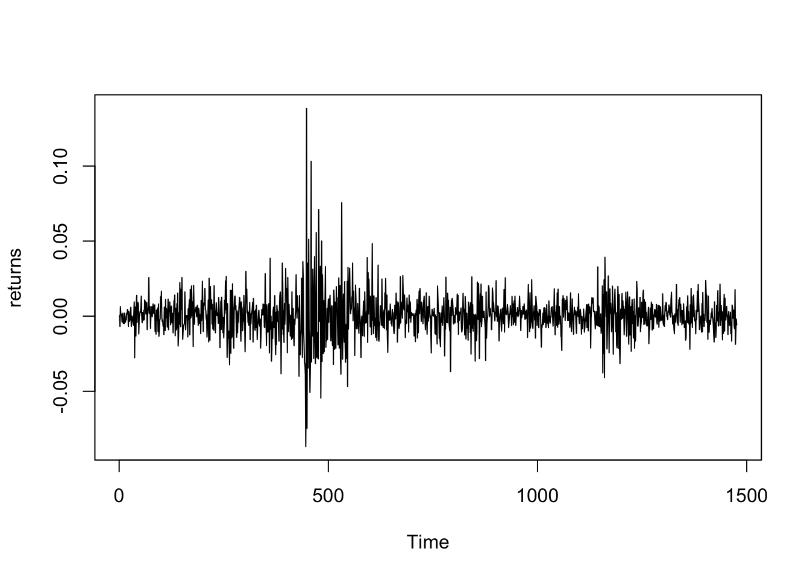
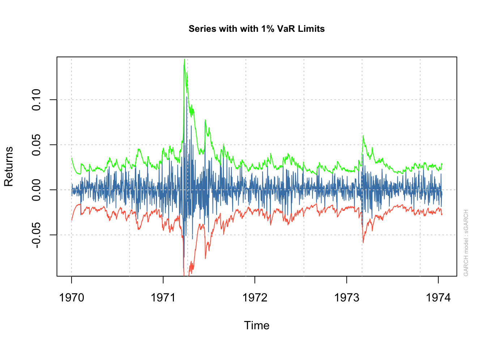

Chapter 21 Problem Set 6
21.1 Q1
Find a closed form expression for the VaR at confidence level \((1-\alpha)\) of the following continuous loss distributions.
21.1.1 Part A
Pareto distribution with \(\mathrm{CDF} F_L(x)=1-(x / m)^{-\beta}, x>m\), with shape parameter (tail index) \(\beta>0\).
\[ \begin{aligned} \mathbb{P}(L \leq VaR_{\alpha}) &= 1-\alpha\\ 1-\left( \frac{VaR_{\alpha}}{m} \right)^{-\beta} &= 1-\alpha\\ \alpha^{-1/\beta}m &= VaR_{\alpha} \end{aligned} \] ### Part B Gumbel distribution with \(\operatorname{CDF} F_L(x)=\exp \left\{-\exp \left\{-\frac{x-\mu}{\sigma}\right\}\right\}, \quad \forall x \in \mathbb{R}\), with mean parameter \(\mu \in \mathbb{R}\) and scale parameter \(\sigma>0\).
\[ \begin{aligned} \mathbb{P}(L \leq VaR_{\alpha}) &= 1-\alpha\\ \exp \left\{ -\exp \left\{ - \frac{VaR_{\alpha}-\mu}{\sigma} \right\} \right\} &= 1-\alpha\\ VaR_{\alpha} &= -\ln(\ln((1-\alpha)^{-1}))\cdot \sigma+\mu\\ &= \mu + \sigma\ln\left( \frac{1}{\ln\left( \frac{1}{1-\alpha} \right)} \right) \end{aligned} \] ### Part C Fréchet distribution with \(\operatorname{CDF} F_L(x)=\exp \left\{-(x / \sigma)^{-\beta}\right\}, \quad \forall x>0\), with shape parameter \(\beta>0\) and scale parameter \(\sigma>0\).
\[ \begin{aligned} \mathbb{P}(L \leq VaR_{\alpha}) &= 1-\alpha\\ \exp \left\{ -\left( \frac{VaR_{\alpha}}{\sigma} \right)^{-\beta} \right\} &= 1-\alpha\\ VaR_{\alpha} &= \sigma\ln\left( \frac{1}{1-\alpha} \right)^{-1/\beta} \end{aligned} \]
21.2 Q2
For a loss RV \(L\) with continuous distribution, show that the integral definition of Conditional Value-at-Risk (CVaR), a.k.a. Expected Shortfall (ES), is equivalent to the conditional expectation: \[ \frac{1}{\alpha} \int_0^\alpha \operatorname{VaR}_u d u=\mathbb{E}\left[L \mid L \geq \operatorname{VaR}_\alpha\right] \] (Hint: Recall that for absolutely continuous \(L\) with CDF \(F(\cdot)\), the VaR is given by the inverse CDF: \(\operatorname{VaR}_\alpha=F^{-1}(1-\alpha)\). Perform the change of variable \(x=F^{-1}(1-u)\), using the fact that the derivative of the inverse of \(F\) is \(\left[F^{-1}(x)\right]^{\prime}=1 / F^{\prime}\left(F^{-1}(x)\right)=\) \(1 / f\left(F^{-1}(x)\right)\), where \(f=F^{\prime}\) is the PDF.)
\[ \begin{aligned} \text{Let } x &= F^{-1}(1-u), \implies VaR_{u} = 1-x\\ \frac{d}{du} x &= [F^{-1}(1-u)]' = \underbrace{ -\frac{1}{F'(F^{-1}(1-u))} = -\frac{1}{f(x)} }_{ \text{by definition} } \\ du &= f(x)dx\\ \frac{1}{\alpha} \int ^{\alpha}_{0}VaR_{u} \, du &= \frac{1}{\alpha} \int ^{\alpha}_{0} F^{-1}(1-u) \, du\\ &= \frac{1}{\alpha} \int ^{F^{-1}(1-\alpha)}_{F^{-1}(1-0)} xf(x)\, dx\\ &= \int ^{VaR_{\alpha}}_{\infty}x \frac{f(x)}{\alpha} \, dx \\ &= \int ^{VaR_{\alpha}}_{\infty}x \frac{f(x)}{\underbrace{ \mathbb{P}(L \geq VaR_{\alpha}) }_{ = \text{cond. PDF } f_{L|L\geq VaR_{\alpha}}}} \, dx \\ \end{aligned} \]
Since we are now integrating from \(VaR_{\alpha}\) to \(\infty\), f(x) is still some pdf spanning \([-\infty,\infty]\), so we need to scale it appropriately by the total probability we are in the space we’re integrating, ie \([VaR_{\alpha}, \infty]\).
\[ \begin{aligned} CVaR_{\alpha} &=\int ^{\infty}_{VaR_{\alpha}} x f_{L|L\geq VaR_{\alpha}}(x) \, dx\\ &= \mathbb{E}(L|L\geq VaR_{\alpha}) \end{aligned} \]
21.3 Q3
(Exercise 2 from 19.13 of SDAFE) Assume that the loss distribution has a polynomial tail with tail index \(α = 3.1\). If \(VaR_{5\%} = 252\), what is \(VaR(0.005)\)? (Hint: Read section 19.6)
We need to use the complementary CDF of returns to obtain the CDF of losses.
A loss distribution with polynomial tail would look something like:
\[ \bar{F}(x) = P(X>x) \propto \int ^{\infty}_{x} s^{-(\alpha+1)} \, ds \propto [-s^{-\alpha}]^{\infty}_{s=x} = x^{-\alpha} \] If we plug in \(x = VaR_{5\%} = 5\%\) then we would have \[ P(X > VaR_{5\%}) = 5\% \implies 5\% \propto (VaR_{5\%})^{-\alpha} \implies VaR_{5\%} \propto \frac{1}{0.05^{1/\alpha}} \]
Given that \(VaR_{5\%} = 252\), then
By definition, \[ P(R \leq y) \sim \int^{y}_{-\infty} f(u) \, du = \frac{A}{a}y^{-a} \text{ as } y \to -\infty \] Which somehow means that: \[ \begin{aligned} \frac{P(R < y_{0})}{P(R< -y_{1})} &\approx \left( \frac{y_{0}}{y_{1}} \right)^{-a}\\ \end{aligned} \] \[ \frac{VaR_{p}}{VaR_{q}} = \left( \frac{P(L \geq p)}{P(L\geq q)} \right)^{-1/a} = \left( \frac{P(L \geq q)}{P(L\geq p)} \right)^{1/a} \]
Using this definition, we have:
\[ \begin{aligned} \frac{P(L \geq VaR_{0.005})}{P(L \geq VaR_{0.05})} &= \left( \frac{VaR_{0.005}}{VaR_{0.05}}\right) ^{-a}\\ \left( \frac{0.005}{0.05} \right)^{-1/a} &= \frac{VaR_{0.005}}{252}\\ \left( \frac{0.05}{0.005} \right)^{1/a} &= \frac{VaR_{0.005}}{252}\\ \\ VaR_{0.005} = 10^{1/a}\cdot 252 &= 10^{1/3.1}\cdot 252 \end{aligned} \]
21.4 Q4
Consider the example with the two risky zero-coupon bonds priced at $95 per $100 face value, where each has 4% default probability independently of the other.
21.4.1 Part A
Calculate the \(\alpha = 5\%\) Entropic Value-at-Risk (EVaR) for one of these bonds. Note that you will need to use numeric minimization, e.g. optimize() in R, to find EVaR.
\[ \begin{aligned} EVaR = inf_{z > 0}\left\{ \ln\left( \frac{M_{L}(z)}{\alpha} \right)/z \right\} \end{aligned} \]
The (marginal) loss distribution of each bond \(\left(L_{1 \ or\ 2}\right)\) is given by the PMF \[ p_L(\ell)=\mathbb{P}(L=\ell)= \begin{cases}0.04, & \ell=95-0=95 \\ 0.96, & \ell=95-100=-5\end{cases} \] with MGF (not series expansion, simply expected formula as we have a simple PMF) \[ M_L(z)=\mathbb{E}\left[e^{z L}\right]=0.04 e^{95 z}+0.96 e^{-5 z} \] The \(\mathrm{EVaR}\) at \(\alpha\) is given by \[ \begin{aligned} E V a R_\alpha & =\inf _{z>0}\left\{\ln \left(M_L(z) / \alpha\right) / z\right\} \\ & =\inf _{z>0}\left\{\ln \left\{\left(0.04 e^{95 z}+0.96 e^{-5 z}\right) / 0.05\right\} / z\right\} \end{aligned} \] Running this minimization w.r.t. \(z\) in \(\mathrm{R}\),
fn = function(z){ log( ( 0.04 * exp( 95*z ) + 0.96 * exp(-5*z) )
/ 0.05 ) / z }
optimise(fn, c(0,1) )z must lie between \([0,1]\), as the MGF of any value greater than 1 results in \(\mathbb{E}[e^{zL}] \to \infty\) since \(e^{zL}\) would become an increasing function.
gives
$minimum
[1] 0.06690106
$objective
[1] 92.10402Which leaves us with \(EVaR_{0.05}(L) = 92.10402\).
21.4.2 Part B
Calculate the EVaR of a portfolio of two of these bonds, and show that it is sub-additive.
The loss distribution for the sum of the two bonds \(\left(L_1+L_2\right)\) is \[ p_{L_1+L_2} L(\ell)=\mathbb{P}\left(L_1+L_2=\ell\right)= \begin{cases}(0.04)^2=0.0016, & \ell=95+95=190 \\ 2(0.96)(0.04)=.0768, & \ell=95-5=90 \\ (0.96)^2=.9216, & \ell=-5-5=-10\end{cases} \] with MGF \[ M_{L_1+L_2}(z)=\mathbb{E}\left[e^{z\left(L_1+L_2\right)}\right]=0.0016 e^{190 z}+0.0768 e^{90 z}+0.09216 e^{-10} \] Running this minimization w.r.t. \(z\) in \(\mathrm{R}\)
fn = function(z){ log( ( 0.0016 * exp( 190*z ) +
0.0768 * exp(90*z) + 0.9216 * exp(-10*z)) / 0.05 ) / z }
optimise(fn, c(0,1) )$minimum
[1] 0.03841828
$objective
[1] 122.0294This shows that \[ EVaR_{0.05}(L_{1}+L_{2}) \leq EVaR_{0.05}(L_{1}) + EVaR_{0.05}(L_{2}) \] \[ 122.0294 \leq 2 \times 92.10402 = 184.208 \]
21.5 Q5
Consider a loss distribution with fat upper tail and some tail index \(\beta > 0\).
21.5.1 Part A
Can you find an EVaR for such distributions? Justify your answer.
You cannot, as to calculate EVaR you need the MGF, and the MGF is not defined for fat tailed distributions. Specifically, moment \(i\), where \(i\geq\beta\) are infinite.
21.5.2 Part B
If the tail index is \(\beta = 1\) (e.g., a Cauchy distribution), can you find CVaR/ES for such distributions? Justify your answer.
Because \(\beta=1\), that means the first moment and beyond are infinite. As CVaR calculates the expected value of the distribution given our losses are already larger than some number, this calculation will not be possible with tail index 1.
We also know that conditional distributions like the one used in CVaR are proportional to the original distribution, which means that the mean is also proportional to infinite.
21.6 Q6
(Exercise 5 from \(\S 19.13\) of SDAFE) Suppose the risk measure is VaR for some \(\alpha\). Let \(P_1, P_2\) be two portfolios whose returns have a joint (2D) normal distribution with means \(\mu_1, \mu_2\), standard deviations \(\sigma_1, \sigma_2\), and correlation \(\rho\). Suppose the initially investments are \(S_1, S_2\). Show that \(\operatorname{VaR}\left(P_1+P_2\right) \leq \operatorname{VaR}_\alpha\left(P_1\right)+\operatorname{VaR}_\alpha\left(P_2\right), \forall \alpha<1 / 2\), i.e. that \(\operatorname{VaR}\) is sub-additive in this case, for \(\alpha<1 / 2\).
Copied all this cuz no way i’d figure this out myself…
Solution: Since \(P_i \sim N\left(\mu_i, \sigma_i^2\right)\) with initial investment amounts \(S_i\) for \(i=1,2\), we have that \(\operatorname{VaR}_\alpha\left(P_i\right)=-S_i \times\left(\mu_i+\sigma_i z_\alpha\right)=-S_i \mu_i-S_i \sigma_i z_\alpha, \forall i=1,2\), where \(z_\alpha=\Phi^{-1}(\alpha)\) is the standard Normal quantile function (i.e., \(\Phi(\cdot)\) is the standard Normal CDF). Thus, \[ \operatorname{VaR}_\alpha\left(P_1\right)+\operatorname{VaR}_\alpha\left(P_2\right)=-\left(S_1 \mu_1+S_2 \mu_2\right)-\left(S_1 \sigma_1+S_2 \sigma_2\right) z_\alpha \]
Just from the VaR definition, now we look at the portfolio
Looking at the combined portfolio, with weights \(w_i=\frac{S_i}{S_1+S_2}, \quad i=1,2\) proportional to the investment amounts in each stock, we have: \[ w_1 P_1+w_2 P_2 \sim N\left(w_1 \mu_1+w_2 \mu_2, w_1^2 \sigma_1^2+w_2^2 \sigma_2^2+2 w_1 w_2 \sigma_1 \sigma_2 \rho\right) \]
The portfolio distribution by statistics
The resulting VaR is \[ \begin{gathered} \operatorname{VaR}_\alpha\left(P_1+P_2\right)= \\ =-\left(S_1+S_2\right) \times\left(\left(w_1 \mu_1+w_2 \mu_2\right)+\sqrt{w_1^2 \sigma_1^2+w_2^2 \sigma_2^2+2 w_1 w_2 \sigma_1 \sigma_2 \rho} \times z_\alpha\right) \\ =-\left(S_1 \mu_1+S_2 \mu_2\right)-\sqrt{S_1^2 \sigma_1^2+S_2^2 \sigma_2^2+2 S_1 S_2 \sigma_1 \sigma_2 \rho} \times z_\alpha \end{gathered} \]
Again using the definition of VaR
But for any \(\rho \in[-1,+1]\), we have: \[ \begin{aligned} S_1^2 \sigma_1^2+S_2^2 \sigma_2^2+2 S_1 S_2 \sigma_1 \sigma_2 \rho &\leqslant S_1^2 \sigma_1^2+S_2^2 \sigma_2^2+2 S_1 S_2 \sigma_1 \sigma_2\\ &=\left(S_1 \sigma_1+S_2 \sigma_2\right)^2 \\ \Rightarrow \sqrt{S_1^2 \sigma_1^2+S_2^2 \sigma_2^2+2 S_1 S_2 \sigma_1 \sigma_2 \rho} &\leqslant S_1 \sigma_1+S_2 \sigma_2 \quad\left(\text { for } \alpha<.5 \rightarrow z_\alpha<0\right) \\ \Rightarrow-\sqrt{S_1^2 \sigma_1^2+S_2^2 \sigma_2^2+2 S_1 S_2 \sigma_1 \sigma_2 \rho} \times z_\alpha &\leqslant-\left(S_1 \sigma_1+S_2 \sigma_2\right) \times z_\alpha\\ \\ \Rightarrow-\left(S_1 \mu_1+S_2 \mu_2\right) z_\alpha- &\sqrt{S_1^2 \sigma_1^2+S_2^2 \sigma_2^2+2 S_1 S_2 \sigma_1 \sigma_2 \rho} \times z_\alpha \leqslant\\ &-\left(S_1 \mu_1+S_2 \mu_2\right) \times z_\alpha-\left(S_1 \sigma_1+S_2 \sigma_2\right) \times z_\alpha \\ \\ \Rightarrow \operatorname{VaR}_\alpha\left(P_1+P_2\right) &\leqslant \operatorname{VaR}_\alpha\left(P_1\right)+\operatorname{VaR}_\alpha\left(P_2\right) \end{aligned} \]
21.7 Q7
For an investment of $4,000, what are estimates of \(VaR^t(0.05)\) and \(ES^t(0.05)\)?
Now, fit a ARMA(0,0)+GARCH(1,1) model to the returns and calculate one step forecasts.

S=4000
alpha = 0.05
library(MASS)
res = fitdistr(returns,'t')
mu = res$estimate['m']
lambda = res$estimate['s']
nu = res$estimate['df']
qt(alpha, df=nu)## [1] -2.33## [1] 0.0465library(fGarch) # for qstd() function
library(rugarch)
garch.t = ugarchspec(mean.model=list(armaOrder=c(0,0)),
variance.model=list(garchOrder=c(1,1)),
distribution.model = "std")
KO.garch.t = ugarchfit(data=returns, spec=garch.t)
show(KO.garch.t)##
## *---------------------------------*
## * GARCH Model Fit *
## *---------------------------------*
##
## Conditional Variance Dynamics
## -----------------------------------
## GARCH Model : sGARCH(1,1)
## Mean Model : ARFIMA(0,0,0)
## Distribution : std
##
## Optimal Parameters
## ------------------------------------
## Estimate Std. Error t value Pr(>|t|)
## mu 0.000675 0.000240 2.81396 0.004894
## omega 0.000003 0.000004 0.79633 0.425839
## alpha1 0.093766 0.035130 2.66910 0.007606
## beta1 0.892222 0.038780 23.00727 0.000000
## shape 5.890859 1.097148 5.36925 0.000000
##
## Robust Standard Errors:
## Estimate Std. Error t value Pr(>|t|)
## mu 0.000675 0.000257 2.6235 0.008704
## omega 0.000003 0.000016 0.1717 0.863675
## alpha1 0.093766 0.149882 0.6256 0.531575
## beta1 0.892222 0.171120 5.2140 0.000000
## shape 5.890859 2.499085 2.3572 0.018413
##
## LogLikelihood : 4596
##
## Information Criteria
## ------------------------------------
##
## Akaike -6.2209
## Bayes -6.2030
## Shibata -6.2210
## Hannan-Quinn -6.2143
##
## Weighted Ljung-Box Test on Standardized Residuals
## ------------------------------------
## statistic p-value
## Lag[1] 0.8041 0.3699
## Lag[2*(p+q)+(p+q)-1][2] 0.8718 0.5417
## Lag[4*(p+q)+(p+q)-1][5] 2.1466 0.5842
## d.o.f=0
## H0 : No serial correlation
##
## Weighted Ljung-Box Test on Standardized Squared Residuals
## ------------------------------------
## statistic p-value
## Lag[1] 0.9099 0.3401
## Lag[2*(p+q)+(p+q)-1][5] 5.1826 0.1391
## Lag[4*(p+q)+(p+q)-1][9] 6.7262 0.2232
## d.o.f=2
##
## Weighted ARCH LM Tests
## ------------------------------------
## Statistic Shape Scale P-Value
## ARCH Lag[3] 0.1194 0.500 2.000 0.7297
## ARCH Lag[5] 0.8386 1.440 1.667 0.7814
## ARCH Lag[7] 1.9592 2.315 1.543 0.7260
##
## Nyblom stability test
## ------------------------------------
## Joint Statistic: 15.8
## Individual Statistics:
## mu 0.05684
## omega 2.24878
## alpha1 0.28907
## beta1 0.12949
## shape 0.14088
##
## Asymptotic Critical Values (10% 5% 1%)
## Joint Statistic: 1.28 1.47 1.88
## Individual Statistic: 0.35 0.47 0.75
##
## Sign Bias Test
## ------------------------------------
## t-value prob sig
## Sign Bias 1.040 0.29849
## Negative Sign Bias 1.760 0.07857 *
## Positive Sign Bias 1.041 0.29825
## Joint Effect 4.374 0.22380
##
##
## Adjusted Pearson Goodness-of-Fit Test:
## ------------------------------------
## group statistic p-value(g-1)
## 1 20 20.23 0.3807
## 2 30 26.52 0.5976
## 3 40 35.17 0.6455
## 4 50 41.55 0.7662
##
##
## Elapsed time : 0.509##
## please wait...calculating quantiles...
##
## *------------------------------------*
## * GARCH Model Forecast *
## *------------------------------------*
## Model: sGARCH
## Horizon: 1
## Roll Steps: 0
## Out of Sample: 0
##
## 0-roll forecast [T0=1974-01-15 19:00:00]:
## Series Sigma
## T+1 0.0006751 0.01038## 1974-01-15 19:00:00
## T+1 0.000675## 1974-01-15 19:00:00
## T+1 0.0104nu = as.numeric(coef(KO.garch.t)[5])
q = qstd(alpha, mean = fitted(pred), sd = sigma(pred), nu = nu) ; q## 1974-01-15 19:00:00
## T+1 -0.0158## 1974-01-15 19:00:00
## T+1 0.00844## [1] -1.95## [1] 0.0688mu = as.numeric(res$estimate['m'])
lambda = as.numeric(res$estimate['s'])
nu = as.numeric(res$estimate['df'])
qt(alpha, df=nu)## [1] -2.33## [1] 0.0465## [1] 75.32den = dt(qt(alpha, df=nu), df=nu)
ES = S * (-mu + lambda*(den/alpha) * (nu+qt(alpha, df=nu)^2 )/(nu-1))
ES## [1] 124